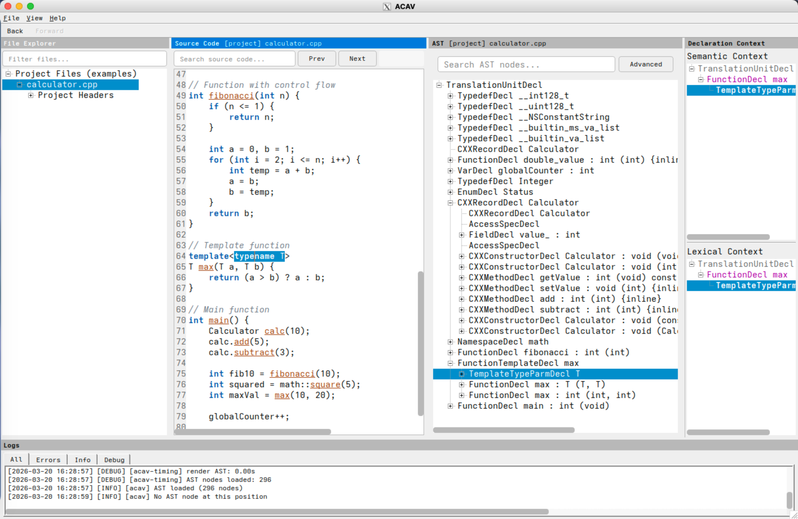

- Generated by
 1.16.1
1.16.1
|
ACAV 68228013681d
Abstract Syntax Tree (AST) visualization tool for C, C++, and Objective-C
|
ACAV (Aurora Clang AST Viewer) is an interactive Abstract Syntax Tree (AST) visualization tool for C, C++, and Objective-C, built with Clang and Qt. Given a JSON compilation database such as compile_commands.json, ACAV lets you open a real project, inspect the AST for a translation unit, and move directly between source code and AST nodes.

Screenshot: ACAV displaying the file explorer, source-code panel, AST tree view, declaration-context panels, and log panel.
With a valid compilation database, ACAV lets you:
ACAV follows a three-program architecture:
ACAV addresses the gap between Clang's powerful front-end infrastructure and the practical difficulty of exploring Clang ASTs interactively. It is designed for real codebases rather than toy examples: it reads a JSON compilation database, applies the recorded build settings for each source file, and keeps the interface responsive through background processing and AST caching.
ACAV is useful for students learning compiler internals, researchers studying program structure, and developers building or debugging Clang-based tools. Its current scope is intentionally limited to read-only AST exploration. ACAV does not modify source code, perform refactoring, or act as a general-purpose editor, and it displays the AST of one translation unit at a time.
The typical workflow is:
Launch ACAV:
If you are new to ACAV, start with this overview, then Installation, and then User Manual. If you want to inspect the API surface, use Classes and Files. If you want to review public release notes, see the Changelog.